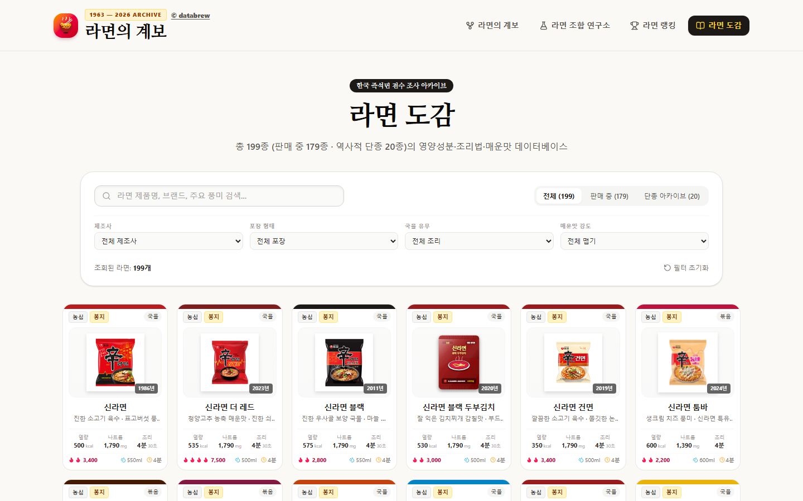
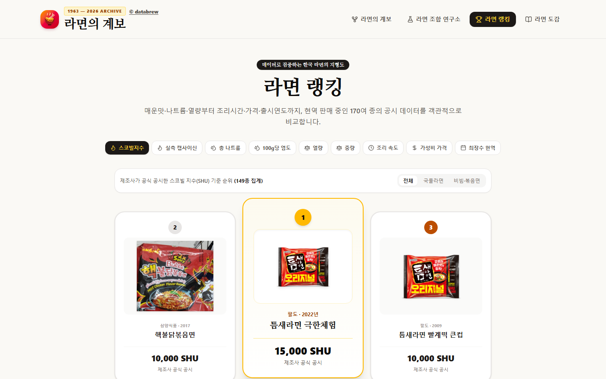
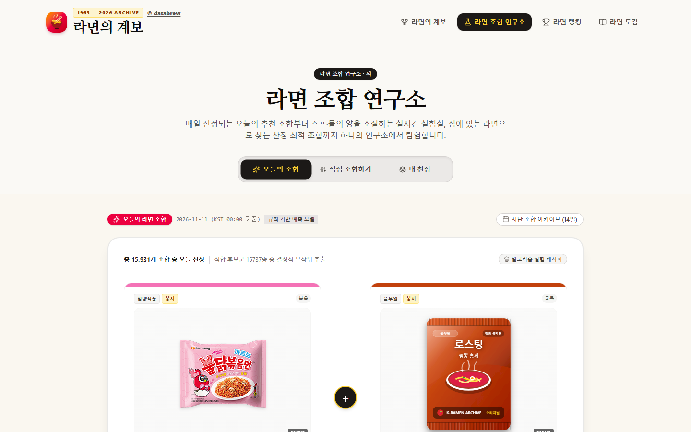

이런 프로젝트입니다
라면은 한국인이 가장 자주 먹는 음식 중 하나인데도, 어떤 라면이 어디서 갈라져 나왔는지는 잘 모릅니다. 신라면과 진라면은 왜 영원한 라이벌인지, 짜파게티와 팔도비빔면은 어떻게 비국물 시장을 열었는지, 꼬꼬면과 나가사끼 짬뽕은 왜 하얀 국물의 난이라고 불리는지.
이 프로젝트는 라면 60년을 정당 계보도의 문법으로 풀었습니다. 한 제품에서 다음 제품으로 이어지는 직접 계승, 가지를 치듯 갈라지는 계열 분화, 같은 시장을 두고 맞붙는 시장 경쟁(라이벌), 취향의 흐름이 바뀌는 사조 전환을 서로 다른 선으로 그리고, 라면을 국물파(탕파)와 비국물파(건파)로 나눠 6개의 집권기와 9개의 결정적 분기점으로 정리했습니다.
계보도에서 끝내지 않고 지금 판매 중인 라면의 데이터까지 연결했습니다. 도감에서 영양성분과 조리법, 매운맛을 찾고, 랭킹에서 스코빌지수와 나트륨, 가성비를 비교하고, 조합 연구소에서는 오늘의 라면 조합을 받아 갑니다.
맛의 궁합은 실측한 사실이 아니라 규칙 기반 예측 모델입니다. 면과 스프가 분리되지 않은 제품의 나트륨 수치는 추정치임을 고지합니다.
무엇을 할 수 있는가
한국 라면 60년을 맛의 파벌, 분열, 집권으로 그린 계보도입니다. 전체 계보(23기수), 국물파(탕파), 비국물파(건파), 숙명의 라이벌전으로 나눠 보고, 시대별 집권기와 가로 캔버스·세로형 분파 족보 뷰를 오갑니다. 직접 계승, 계열 분화, 시장 경쟁, 사조 전환은 선 모양으로 구분합니다.
건국과 원조의 태동(1963~), 탕과 건의 대분화, 얼큰 소고기탕의 천하통일, 하얀 국물의 난, 불닭 화마와 프리미엄 대전, 크림 퓨전과 백가쟁명의 6개 시대와, 삼양라면 10원, 짜파게티와 팔도비빔면, 꼬꼬면, 불닭볶음면, 신라면 툼바 같은 9개 분기점을 누르면 당시 시장 상황과 차별점이 펼쳐집니다.
계보도 위의 나는 어느 라면파? 버튼으로 내 입맛이 어느 파벌에 가까운지 알아보는 코너입니다. 라면 이름이나 제조사로 계보도를 검색해 그 라면의 계열을 강조할 수도 있습니다.
판매 중 179종과 역사 속으로 사라진 단종 20종, 모두 199종의 영양성분, 조리법, 매운맛을 모았습니다. 농심, 삼양식품, 오뚜기, 팔도, 풀무원, 하림, 편의점 PB 전용 제조사별로, 봉지와 용기, 국물 유무, 맵기 단계로 거를 수 있습니다.
현역으로 판매 중인 170여 종의 공시 데이터를 스코빌지수, 총 나트륨, 열량, 중량, 조리 속도, 가성비 가격, 최장수 현역 기준으로 비교합니다. 스코빌지수는 제조사가 공식 공시한 값으로 매깁니다.
매일 한 개씩 선정되는 오늘의 조합, 스프와 물의 양을 조절하며 실시간으로 실험하는 직접 조합하기, 집에 있는 라면으로 최적 조합을 찾는 내 찬장이 있습니다. 조합마다 궁합 점수와 의외성 점수, 권장 조리 시간을 알려 줍니다.
화면 미리보기
계보도 — 파벌, 분열, 집권

도감 — 즉석면 199종 전수 조사

랭킹 — 매운맛, 나트륨, 가성비

조합 연구소 — 오늘의 라면 조합
데이터와 만드는 방법
맛의 궁합은 실측 사실이 아니며, 면과 스프가 분리되지 않은 제품의 나트륨 수치는 추정치입니다. 서비스 하단에 데이터 원칙과 분석 방법론, 신뢰도 기준을 따로 공개합니다.
기술 및 제작 방식
개발 현황
2026년 11월 기준 자료. 도감 199종(판매 중 179종, 단종 20종), 랭킹 170여 종, 매일 바뀌는 오늘의 조합까지 모두 열려 있습니다. 새 제품이 나오면 도감과 계보에 추가합니다.